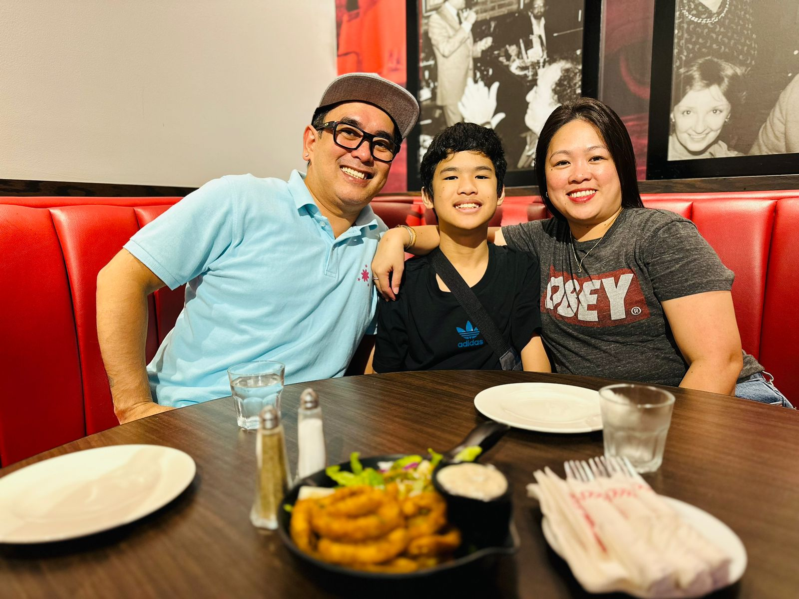

Overview
Name: Iori Andrei H. Monreal
Gender: Male
Birthday: August 10, 2010
Location: Dubai, UAE
Family and Relationships

<
Me and my parents
Life Events
- 2018: First vacation in UAE. Explored Legoland and other parks and attractions.
- 2019: Moved to UAE. Went to Iceland, once a popular and large waterpark that shutted down after a few months.
- 2020: Got circumsized. Tried out ice skating for the first time.
- 2021: First holy communion. Went to Dubai Expo 2020.
- 2022: Completed elementary grade. Watched a lot of concerts from famous artists.
- 2023: Completed this school year with a lot of awards
Talents
- Good at memorizing
- Great at kickboxing
- Singing
- Drawing
Dreams and Aspirations
My current dream as of now is to become a great chef so that I can cook so many delicous meals for me and my family. I chose this profession so that I can make fancy food worth the money and actually makes you feel full. I want to change the world of fancy food because at this time I do not think fancy food is worth it, especially for that high of a price.